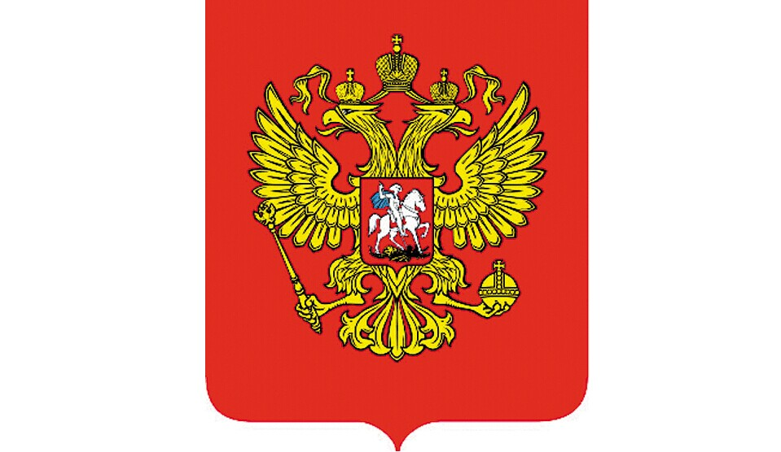

- 俄罗斯国旗
- 俄罗斯国徽
- 俄罗斯标志性建筑
- 俄罗斯地理位置
俄罗斯概况
俄罗斯联邦, 简称俄罗斯或俄国
人口概况
俄罗斯人口分布极不均匀, 欧洲部分人口约占全国人口的4/5。而广大东部地区人口密度每平方千米不足一人。城市人口占全国的73%。1.41亿(2008年政府估计, 世界第9名)。人口密度8.3人/平方公里(世界国家和地区第209名)。性别比为0.88。
俄罗斯经济
俄罗斯2010年按汇率计算, GDP总量为14769亿美元, 人均GDP10000余美元。俄罗斯的经济结构非常不合理, 绝大部分收入来自于资源行业, 包括石油、天然气、矿石和木材等, 受这类商品价格的波动影响非常大。因此, 在资源价格上涨的情况下, 2000～2008年间, 俄罗斯经济一直保持较快的增长。2008年末2009年初, 社会各界普遍认为, 2009年俄罗斯经济会有所下降, 但不至于剧烈滑坡。然而, 金融危机对俄罗斯经济的冲击却出乎预料, 由于石油价格暴跌, 资源的国际需求减少, 俄罗斯经济在2009年遭到重创, 自2000年以来首次出现负增长, 下滑幅度超过了二十国集团及金砖四国。2009 年1月至10月, GDP同比下降9．6%, 2009年按照美元汇率计算的GDP, 下降了25%左右；梅德韦杰夫估计, 2009年降幅为7．5%；世界银行认为降幅可达8. 7%。俄罗斯甚至认为, 其经济跻身于金砖四国已名不符实。
外交关系
开展全方位外交, 以独联体为战略重点, 以与西方关系、特别是与欧洲关系为优先, 同时加强亚太外交, 加大对中、印等亚太大国的借重。其宗旨是积极推动多极化进程, 力主重振俄大国地位, 突出维护国家利益, 着眼点是为俄国内经济复兴创造有利的外部条件。
经贸往来
据俄海关委员会统计，2009年货物贸易进出口3891.4亿美元，较上年（下同）减少37.6%。其中，出口2339.4亿美元，减少36.4%；进口1552.1亿美元，减少39.3%；顺差787.3亿美元，减少29.7%。俄主要出口商品是石油和天然气等矿产品、金属及其制品、化工产品、机械设备和交通工具、宝石及其制品、木材及纸浆等。主要进口商品是机械设备和交通工具、食品和农业原料产品、化工品及橡胶、金属及其制品、纺织服装类商品等。